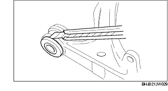
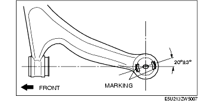

Workshop Manual ➭ SUSPENSION ➭ FRONT SUSPENSION ➭ FRONT LOWER ARM REMOVAL/INSTALLATION
FRONT LOWER ARM REMOVAL/INSTALLATION
id021300800600
{: #wp1059778}
Caution
• Performing the following procedures without first removing the ABS wheel-speed sensor may possibly cause an open circuit in the wiring harness if it is pulled by mistake. Before performing the following procedures, remove the ABS wheel-speed sensor (axle side) and fix it to an appropriate place where the sensor will not be pulled while servicing the vehicle.
-
Remove in the order indicated in the table.
-
Install in the reverse order of removal.
-
Inspect the front wheel alignment. (See FRONT WHEEL ALIGNMENT.)

|
Caliper and mounting support {: #wp1059867} (See Caliper and Mounting Support Removal Note.) {: #wp1059931} |
|
|---|---|
|
2 {: #wp1059905} |
Front lower arm ball joint {: #wp1059908} (See Front Lower Arm Ball Joint Removal Note.) {: #wp1059955} |
|
3 {: #wp1059912} |
Tie-rod end {: #wp1059915} (See Tie-rod End Ball Joint Removal Note.) {: #wp1059980} |
|
4 {: #wp1059992} |
Front upper arm ball joint {: #wp1059995} (See Upper Arm Ball Joint Removal Note.) {: #wp1060017} |
|
5 {: #wp1060029} |
Front hub, steering knuckle component {: #wp1060032} |
|
6 {: #wp1060054} |
Stabilizer control link nut (front lower arm side) {: #wp1060057} |
|
7 {: #wp1060079} |
Front lower arm {: #wp1060082} |
|
8 {: #wp1060104} |
Clip {: #wp1060107} (See Clip Installation Note.) {: #wp1060131} |
|
9 {: #wp1060143} |
Dust boot {: #wp1060146} |
|
10 {: #wp1060170} |
Bushing (rear side) {: #wp1060173} (See Bushing (Rear Side) Removal Note.) {: #wp1060199} (See Bushing (Rear Side) Installation Note.) {: #wp1060213} |
|
11 {: #wp1060225} |
Bushing (front side) {: #wp1060228} (See Bushing (Front Side) Removal Note.) {: #wp1060258} (See Bushing (Front Side) Installation Note.) {: #wp1060272} |
|
12 {: #wp1060284} |
Bushing (shock absorber lower side connecting part) {: #wp1060287} (See Bushing (Shock Absorber Lower Side Connecting Part) Removal Note.) {: #wp1060321} (See Bushing (Shock Absorber Lower Side Connecting Part) Installation Note.) {: #wp1060335} |
Caliper and Mounting Support Removal Note
- Remove the caliper and mounting support from the steering knuckle and suspend it with a cable in a location out of the way.
Front Lower Arm Ball Joint Removal Note
- Disconnect the front lower arm ball joint from the steering knuckle using the SST.{: #wp1060423}
*Note*{: #wp1060459}
• When removing the front lower arm ball joint, the steering knuckle bushing may also come off. If it comes off, replace the steering knuckle.
Upper Arm Ball Joint Removal Note
-
Loosen the bolts on the vehicle side.
-
Disconnect the upper arm ball joint using the SST.{: #wp1060497}
Bushing (Rear Side) Removal Note
Caution
• Be careful not to damage the front lower arm. If it is damaged, replace it.
- Mark the front upper arm as shown in the figure.{: #wp1060571}
- Remove the bushing using the SSTs.{: #wp1060598}
Bushing (Front Side) Removal Note
Caution
• Be careful not to damage the front lower arm. If it is damaged, replace it.
- Cut off the stopper plate rubber using a razor.{: #wp1060662}

- Cut off 5-6 mm {0.20-0.23 in} from each side of the knob end of the bushing using a hacksaw.{: #wp1060689}
- Remove the bushing using the SSTs.{: #wp1060732}
Bushing (Shock Absorber Lower Side Connecting Part) Removal Note
Caution
• Be careful not to damage the front lower arm. If it is damaged, replace it.
- Remove the bushing using the SSTs.{: #wp1060796}
Bushing (Shock Absorber Lower Side Connecting Part) Installation Note
- Compress the bushing using the SSTs.{: #wp1060842}
Bushing (Front Side) Installation Note
- Press the bushing in using the SSTs.{: #wp1060888}
- Insert the stopper plate rubber into the inner pipe of the bushing (front side).{: #wp1060924}
Bushing (Rear Side) Installation Note
- Align the marks placed during removal and install the bushing.{: #wp1060961}

- Press the bushing in using the SSTs.{: #wp1060988}
Clip Installation Note
-
Wipe the grease off the ball joint stud.
-
Fill the inside of the new dust boot with grease.
-
Install the dust boot to the ball joint.
-
Install the clip using the SST.{: #wp1061064}
-
Verify that the clip is installed securely to the groove.
-
Wipe off any excess grease.
Front Lower Arm Installation Note
-
Install the front lower arm rear side bushing part horizontally.
-
Install the front lower arm front side bushing part.